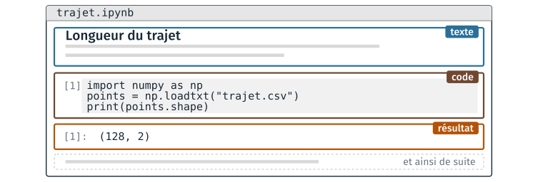

Un notebook et la syntaxe de Markdown#
Cette partie présente le notebook, un document qui réunit du texte, du code et ses résultats, que les cours et les TD de Python du module emploient. Elle donne la syntaxe minimale de Markdown, dans laquelle s’écrivent ses cellules de texte, puis la façon de lancer JupyterLab sur les postes de la salle. Le TD 1d l’accompagne ; il est présenté en fin de page.
Programmation littérale#
Dans un projet, le code est d’ordinaire dans un fichier, son explication dans un autre, et son résultat n’est enregistré nulle part. Un notebook, ou carnet, réunit les trois dans un seul document, dans l’ordre du raisonnement : des blocs de texte, des blocs de code, et sous chaque bloc de code le résultat de son exécution.

Les trois sortes de blocs d’un notebook, dans l’ordre où ils sont écrits.#
L’idée d’écrire un programme comme un texte explicatif, dans lequel le code s’insère à l’endroit où il est expliqué, est due à Donald Knuth, qui l’a nommée programmation littérale (literate programming) en 1984.
Le résultat de chaque bloc de code est enregistré dans le fichier du notebook : rouvert le lendemain, il affiche encore ce que le code a produit, sans être exécuté de nouveau.
Le fichier
.ipynbest un fichier texte au format JSON, produit par l’application, qui ne se modifie pas à la main.Deux exécutions du même notebook donnent des fichiers qui diffèrent sur de nombreuses lignes : un
.ipynbse versionne mal.
Le notebook sert à explorer des données et à expliquer une démarche. Le code
d’un outil qui doit s’exécuter seul, du début à la fin, s’écrit dans un
script .py, au cours 3.
Forme |
Usage |
Limite |
|---|---|---|
Session interactive ( |
essayer une ligne, faire un calcul |
rien n’est conservé |
Script ( |
un programme que l’on relance et que l’on versionne |
les résultats intermédiaires ne sont pas affichés |
Notebook ( |
explorer, documenter, présenter un résultat |
fichier lourd, difficile à versionner |
La syntaxe minimale de Markdown#
Une cellule de texte s’écrit en Markdown : du texte brut, où quelques signes indiquent la mise en forme.
Ce qu’on tape |
Ce qui s’affiche |
|---|---|
|
un titre, puis un sous-titre plus petit |
deux lignes séparées par une ligne vide |
deux paragraphes |
|
du texte en gras |
|
une liste à puces |
|
une liste numérotée |
|
le site, un lien |
|
la variable |
Avertissement
Deux pièges fréquents :
deux lignes consécutives, sans ligne vide entre elles, ne font qu’un seul paragraphe ;
le dièse veut une espace :
#Titrene produit pas un titre,# Titreen produit un.
Le texte tapé reste lisible sans être mis en forme, selon l’intention de John Gruber, qui a publié Markdown en 2004. Le cours 2 y ajoute les tableaux et les images.
Dans JupyterLab, Maj + Entrée affiche la cellule mise en forme, et un
double-clic revient au texte tapé. Une cellule de texte n’a pas de numéro
[1] : aucun programme ne l’exécute.
Un notebook dans JupyterLab#
JupyterLab affiche et exécute des notebooks dans un onglet du
navigateur. Le noyau, un programme Python lancé par JupyterLab, exécute
les cellules de code et garde leurs variables d’une cellule à l’autre.
Son nom est affiché en haut à droite, par exemple Python 3 (ipykernel).
Le numéro entre crochets, [1], est le rang d’exécution de la cellule,
qui peut différer de sa place dans le document. Une cellule exécutée une seconde fois
prend le numéro suivant. Des numéros qui ne se suivent pas du haut vers le
bas indiquent que les cellules ont été exécutées dans le désordre.
Avertissement
Les cellules peuvent être exécutées dans n’importe quel ordre, et une cellule modifiée mais non exécutée n’a aucun effet. Un notebook qui donne le bon résultat sur le poste de son auteur peut en donner un autre, exécuté du début à la fin sur un autre poste. Avant de le partager, l’exécuter en entier depuis le début : menu Kernel, Restart Kernel and Run All Cells.
Lancer JupyterLab#
JupyterLab est installé avec Anaconda, et se lance dans un terminal où conda est actif. Le module donne deux terminaux, pour ne pas être bloqué si le réglage de Git Bash manque sur un poste.
Depuis l’invite de commandes d’Anaconda, à essayer d’abord : menu Démarrer, « Anaconda Prompt ». conda y est actif sans réglage.
(base) …>cd Desktop\info01\cours1\1d_notebook
(base) …>jupyter lab
Depuis Git Bash, le terminal du module, après le réglage du TD 1c.
$ cd ~/Desktop/info01/cours1/1d_notebook
$ jupyter lab
Le navigateur s’ouvre sur
localhost:8888, le poste lui-même : le serveur de JupyterLab tourne sur le poste.Le terminal reste occupé tant que JupyterLab tourne.
Ctrl+Cdans le terminal l’arrête.Anaconda Navigator reste un dernier recours : page d’accueil, fiche JupyterLab, bouton Launch. Il a mis plusieurs minutes à s’ouvrir sur les postes en 2026.
Le cours 5 explique l’organisation en client et serveur d’un notebook.
TD de la partie#
TD 1d — Un notebook dans JupyterLab, 12 minutes : ouvrir
altitudes.ipynbdans JupyterLab ; exécuter les cellules dans le désordre, et voir ce que le noyau retient ; ajouter une cellule de texte en tête ; relancer JupyterLab depuis Git Bash si le temps le permet.
Les TD des autres parties sont dans Travaux dirigés de la séance 1, version 2.